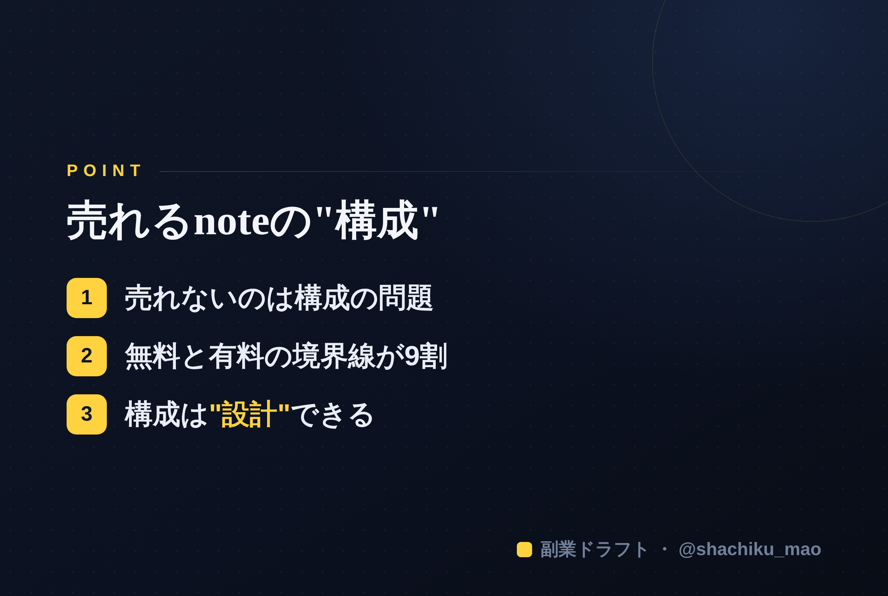

1. 「タイトルをコピー」→ note のタイトル欄に貼る
2. オレンジのラベルの画像（見出し画像）を note の見出し画像に設定
3. 「本文1をコピー」→ note本文に貼る
4. 青いラベルの位置（本文の途中）に、同じ名前の画像をアップして挿入
5. 「本文2をコピー」→ 続きを貼る
※ 見出しが普通の文字になったら、その行を選んで「大見出し」に設定してください
「良い内容を書いたのに、有料noteが全然売れない」
その原因、中身ではなく"構成"にあるかもしれません。有料noteの売れ行きは、内容の質が同じでも、構成次第で大きく変わります。今日はその違いを解説します。
売れないnoteの構成
売れない有料noteには、共通のパターンがあります。
- 無料部分が薄い：買う前に「役に立ちそう」と感じさせられていない
- 有料ラインの位置が悪い：肝心なところが全部無料で読めてしまう、または逆に無料部分が短すぎて価値が伝わらない
- 誰向けか不明：自分向けの記事だと思ってもらえない
つまり、「読者が"お金を払う理由"を感じる前に、判断されている」のです。
売れるnoteの構成
売れる有料noteは、構成が戦略的です。
① 冒頭で"自分ごと"にさせる 「こんな悩みありませんか？」と、読者の悩みをズバリ言語化。「これは私のための記事だ」と思わせる。
② 無料パートで"価値を体感"させる 無料で読める範囲で、すでに一つ役立つ気づきを渡す。「無料でこれなら、有料はもっとすごいはず」と期待させる。
③ 有料ラインは"具体に入る直前"に置く 「では、具体的な方法を解説します」——ここから有料。読者が一番知りたい"How"の手前で区切る。
④ 有料パートで出し惜しみしない 買ってくれた人には、期待を超える具体性を返す。満足がリピートと口コミを生む。
「無料と有料の境界線」が9割
売れるかどうかは、どこまで無料で見せて、どこから有料にするか——この設計でほぼ決まります。ここを感覚でやると失敗します。
構成は"設計"できる
文章のセンスがなくても、構成は設計できます。「タイトル→無料パート→有料ライン→章立て→CTA」という設計図に沿って組み立てれば、売れる形に近づきます。

あなたの強みから、有料noteの構成案（タイトル・価格の目安・無料パート・有料ライン・章立て・CTA）を丸ごと設計してくれるのが 「副業ドラフト」 です。売れる構成を、感覚ではなく設計で。無料で試せます。
👉 https://note-threadssf.onrender.com
中身の前に、構成。ここが売上を分けます。